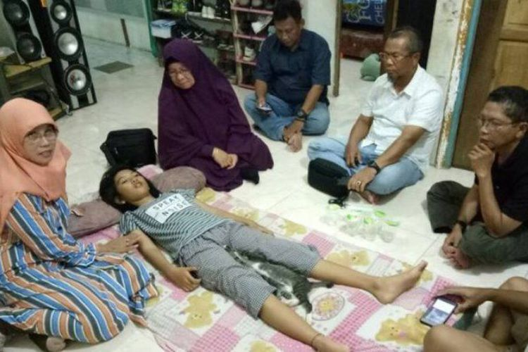
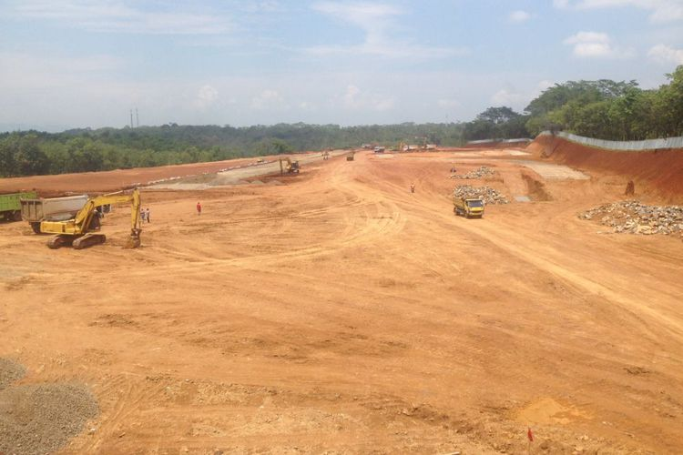
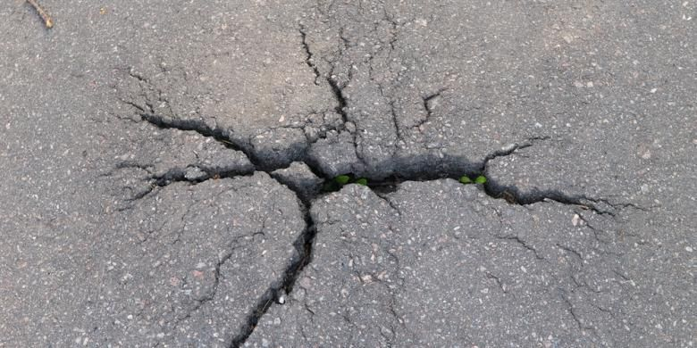
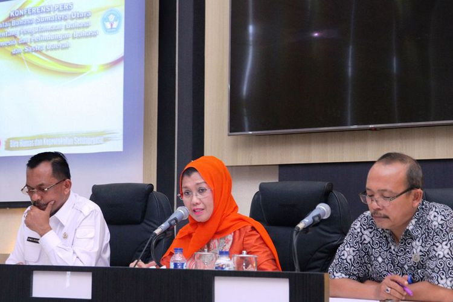

| MBC News | |||||||||||||||||||||||||||||||||||||||||||||||||||||||||||||||||||||||||||||||||||||||||||||||||||
| NATIONAL | REGIONAL | POLITICS | ECONOMY | ENTERTAINMENT | TECHNOLOGY | SPORT | TRAVEL | HEALTH | |||||||||||||||||||||||||||||||||||||||||||||||||||||||||||||||||||||||||||||||||||||||||||
Remaja Ini Tidur Nonstop Selama 13 Hari, Bangun Sebentar lalu Tidur LagiSeorang remaja berusia 13 tahun, Siti Raisa Miranda atau kerap disapa Echa, tertidur selama 13 hari dan baru bangun pada hari Sabtu (21/10/2017) sekitar pukul 09.00 Wita. Cerita Echa mendadak populer di media sosial setelah sang ayah, Mulyadi, mengunggah foto anaknya yang sudah tertidur lebih dari 10 hari tanpa bangun di akun Facebook Ya Lo Ve miliknya pada 18 Oktober lalu. |
Semarang Bangun Sirkuit Balap InternasionalKota Semarang, Jawa Tengah segera memiliki sirkuit balap kelas internasional. Sirkuit itu yang bakal digunakan sebagai ajang balap Motocross internasional di Indonesia di tahun-tahun mendatang. Sejauh ini, pembangunan sport center tahap pertama itu telah dimulai dengan anggaran Rp 38 miliar. Pembangunan tahap pertama berupa lintasan balap sudah mencapai 40 persen. |
||||||||||||||||||||||||||||||||||||||||||||||||||||||||||||||||||||||||||||||||||||||||||||||||||
Pantau Kebakaran Hutan di Riau, Pesawat F-16 DiterjunkanPesawat tempur jenis F-16 melakukan pemantauan udara karhutla ( kebakaran hutan dan lahan) di sejumlah wilayah di Provinsi Riau. Hasil monitoring, ditemukan kebakaran di wilayah Kabupaten Kampar. Pemantauan itu menggunakan pesawat tempur F-16 TNI AU Lanud Roesmin Nurjadin Pekanbaru. Temuan kebakaran pun langsung disampaikan ke Satgas Darat dan Satgas Udara Penanggulangan Kebakaran Hutan Riau. |
|||||||||||||||||||||||||||||||||||||||||||||||||||||||||||||||||||||||||||||||||||||||||||||||||||
8 Kali Gempa Susulan Terjadi di Laut Selatan Jawa TimurGempa tektonik terjadi di laut selatan Jawa Timur, Kamis (26/10/2017). Berdasarkan catatan Stasiun Geofisika, Karangkates, Kabupaten Malang, hingga pukul 8.00 WIB sudah terjadi delapan kali gempa. Kepala Stasiun Geofisika Karangkates, Kabupaten Malang, Musripan mengatakan, gempa pertama kali terjadi pada Rabu (25/10/2017) sekitar pukul 23.35 WIB dengan kekuatan 4,9 skala richter. |
|||||||||||||||||||||||||||||||||||||||||||||||||||||||||||||||||||||||||||||||||||||||||||||||||||
Sumut Wajibkan Nama Gedung dalam Bahasa IndonesiaGempuran penggunaan bahasa asing di setiap sendi kehidupan masyarakat semakin mengancam keberadaan bahasa Indonesia dan bahasa daerah. Banyak orang terkesan malu dan jengah menggunakan bahasa ibunya saat berhadapan dengan orang asing, atau kaumnya sendiri. Sebagian takut dianggap ketinggalan jaman, tidak gaul atau ketinggalan. Kalau hal ini dibiarkan, tidak mustahil eksistensi Bahasa Indonesia juga bahasa dan sastra daerah di Sumatera Utara akan terpinggirkan. Untuk itu, Pemerintah Provinsi Sumut mengantisipasinya dengan melahirkan Peraturan Daerah (Perda) Nomor 8 Tahun 2017 tentang Pengutamaan Bahasa Indonesia dan Pelindungan Bahasa Daerah dan Sastra Daerah. |
|||||||||||||||||||||||||||||||||||||||||||||||||||||||||||||||||||||||||||||||||||||||||||||||||||
| MBC News © 2017 | |||||||||||||||||||||||||||||||||||||||||||||||||||||||||||||||||||||||||||||||||||||||||||||||||||
| Minggu | Senin | Selasa | Rabu | Kamis | Jumat | Sabtu |
|---|---|---|---|---|---|---|
| 1 | 2 | 3 | ||||
| 4 | 5 | 6 | 7 | 8 | 9 | 10 |
| 11 | 12 | 13 | 14 | 15 | 16 | 17 |
| 18 | 19 | 20 | 21 | 22 | 23 | 24 |
| 25 | 26 | 27 | 28 | 29 | 30 | 31 |